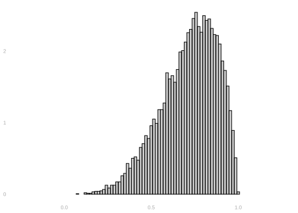
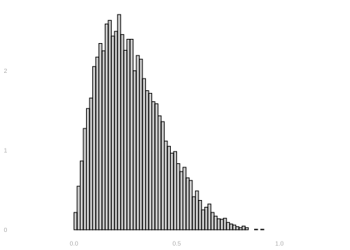
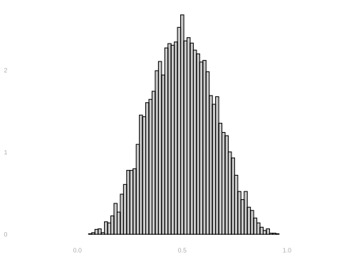
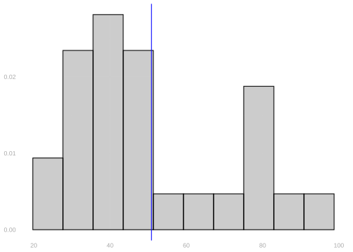
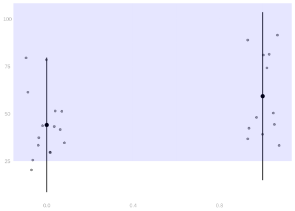

3 Homework: Review
$$ \newcommand{X}{} \newcommand{Y}{}
$$
Mean and Standard Deviation Review
Definitions
If you have a list of numbers \(X_1, X_2, \ldots, X_n\), the mean (which we call \(\bar X\)), is the sum of the numbers divided by the number of numbers. \[ \bar X = \frac{1}{n}\sum_{i=1}^n X_i \]
The standard deviation (which we call \(\hat\sigma\)) is a measure of how spread out the numbers are. It’s meant to be what it sounds like: the standard (usual) deviation (distance) of number in the list from the list’s mean.
\[ \hat \sigma^2 = \frac{1}{n}\sum_{i=1}^n (X_i - \bar X)^2 \]
Here to come up with one number describing what’s ‘standard’, instead of just taking the average, we do something different. We square our deviations, take the average of squares, and use the square root of the result. This still gives us a number that measures the size of ‘a deviation’ instead of ‘a squared deviation’ because we’ve taken the square root after averaging. But by averaging the squares, we’re effectively making bigger deviations ‘count more’ than smaller ones.1
In the figure above, we visualize a list of n=1000 numbers as purple dots. The x-coordinates are their values \(X_i\) and their y-coordinates are their index \(i\) in the list. The solid blue line indicates their mean \(\bar X\) and the dashed lines one standard deviation away from the mean in either direction, i.e., \(\bar X \pm \hat\sigma\). We also include a histogram of the numbers to show the density of dots near different values of \(x\). As you think about the following exercises, it might make sense to think about what a visualization like this might look like for the lists you’re working with.
Calculations
Properties
Visualization
Consider the three histograms below.



Supreme Court Justices
The Data
Start R and run this block to get the dataset we’ll be working with.
EMdata = read.csv("https://qtm285-1.github.io/assets/data/EMdata.csv")- This data is on 27 justices from the Warren (’53 - ’69), Burger (’69 - ’86), and Rehnquist (’86 - ’05) courts
- The data can be interpreted as a census of justices for the 1953 - 2005 era. Each row is a justice and each column is a variable. The column ‘justice’ is the name of the justice. We’ll be looking at a few other variables.
- CLlib: The percentage of votes in liberal direction for each justice in civil liberties cases
- party: the political party that nominated the justice (Republican =0, Democrat=1)
- ur: the justice is a member of an under-represented group, such as a racial or gender minority (under-represented group=1, not in under-represented group=0)
- To get you started, I’m going to plot a histogram of the percentage of liberal votes, identifying the mean with a vertical line. You may want to edit this code to answer future questions.
CL.histogram = ggplot(EMdata) +
geom_histogram(aes(x=CLlib, y=after_stat(density)),
bins=10, alpha=.3, color='black') +
geom_vline(aes(xintercept=mean(CLlib)),
color="blue") +
xlab("% Support for Liberal Position on Civil Liberties Cases (CLlib)")
CL.histogram
mean_sd = function(x,mult=1) {
data.frame(y=mean(x),
ymin=mean(x)-mult*sd(x),
ymax=mean(x)+mult*sd(x))
}
civil.liberties.plot = ggplot(EMdata) +
geom_point(aes(x=party, y=CLlib),
position=position_jitter(w=.1, h=0), alpha=.4) +
stat_summary(aes(x=party, y=CLlib), geom="pointrange",
fun.data=mean_sd, fun.args = list(mult=2)) +
xlab("Nominating Party") +
ylab("%Support for Liberal Position on CL Cases")
civil.liberties.plot
Frequencies, Indicators and Means
Introduction
Look at this list of numbers. \[ 1, 2, 3, 4, 5 \]
How many of those numbers are greater than or equal to 3? 3/5 of them are. We pronounce this ‘3 out of 5’, but if we take the division sign in there seriously, we get \(3/5 = .6\). \(.6\)—often we say, equivalently, 60%—is the frequency that one of those five numbers is greater than or equal to 3.
We’ve been talking a lot about means so far and there is a connection. Frequencies are means. Let’s think of the list above as a sample of 5 numbers: \(Y_1=1, Y_2=2, \ldots\). And let’s define, in terms of these, a corresponding sample of zeros and ones, \(O_1 \ldots O_5\).
\[ O_i = \begin{cases} 1 & \text{ if } Y_i \ge 3 \\ 0 & \text{ otherwise } \end{cases} \]
We call these indicators: \(O_i\) indicates whether \(Y_i\) is greater than or equal to \(3\) by being one if it is and zero if it isn’t. And for our list specifically, the indicator list can be written as
\[ O_1 = 0, \ O_2 = 0, \ O_3 = 1, \ O_4 = 1, \ O_5 = 1 \]
What’s the mean of our indicators \(O_1 \ldots O_5\)? \(.6\), right? That’s not a coincidence. The frequency that something happens is the mean of indicators that it does happen. Thinking this way will come in handy because we’ll talk about means a lot in this class and this lets us use all the same ideas to think about frequencies. We do this so often that we have a special notation for indicators. Instead of \(O_i\), we’d usually write \(1_{\ge 3}(Y_i)\) so we don’t have to remember the meaning of a new letter—it’s all there. Indicators aren’t just for something being greater than equal to something else. We could, for example, talk about the indicators \(1_{=3}(Y_i)\) or \(1_{<0}(Y_i)\). I’ll leave it to you to work out what those mean.
Writing indicators this way makes it clear that what we’re doing is evaluating a function at \(Y_i\). A function that is defined like this. \[ 1_{\ge 3}(y) = \begin{cases} 1 & \text{ if } Y_i \ge 3 \\ 0 & \text{ otherwise } \end{cases} \qqtext{ for any value of $y$} \]
\(1_{=3}\) and \(1_{<0}\) are, of course, also functions. We call them indicator functions.
Calculating Frequencies in R
The R code we tend to use to calculate frequencies uses these connections. Here’s one phrased exactly the way we’ve been talking about it, where we first evaluate the indicator function \(1_{\ge 3}\) at the sample \(Y_1 \ldots Y_5\), to get the indicator variables \(1_{\ge 3}(Y_1) \ldots 1_{\ge 3}(Y_5)\), then take their mean to get the frequency we want.
Y = c(1,2,3,4,5)
ge.3 = function(x) { ifelse(x >= 3, 1, 0) }
freq.X.ge.3 = mean(ge.3(Y))
freq.X.ge.3- 1
- This is the list of numbers we’re talking about. \(Y_1 \ldots Y_n\).
- 2
- This defines the indicator function \(1_{\ge 3}\)
- 3
- This evaluates it to get the the indicator variables \(1_{\ge 3}(Y_i)\) and takes their mean.
[1] 0.6And here’s what we’d usually write in practice. It’s more compact.
mean(Y >= 3)[1] 0.6Indicators and Randomness
Let’s look at the relationship between indicators and random variables. We haven’t reviewed random variables yet, so it’s ok if you feel like you’re only following this halfway. That’s why this is here. We’re going to start talking about how to do calculations involving random variables soon — summing them, taking expected values, variances, etc. — and if you can engage with whatever haziness is there now and start formulating some questions or identifying places in this text where you’re not sure what’s going on, it’ll be easier for us to get what needs clarifying clarified before it starts to get in the way.
This section is just reading. There are no exercises involving random variables in this homework. And with good reason. These aren’t random samples in any meaningful sense. The list \(1,2,3,4,5\) is obviously a convenience sample. And thinking probabilistically about what happens in the supreme court is, if possible at all, something that requires a lot of subtlety and some data we don’t have here.
Random Variables, Briefly
For what it’s worth, here’s a vague description of what a random variable is that I find useful. A random variable is a convenient way of writing a probability distribution. That’s easy to define. A probability distribution is just a table of pairs — a value and a corresponding probability — where the probabilities are non-negative and sum to one. The values can be anything at all, but usually they’re numbers or pairs/triples/etc. of numbers.
Here’s the distribution of a random variable \(Y_i\) that represents the result of rolling a six-sided die.
| probability | value of \(Y_i\) |
|---|---|
| 1/6 | 1 |
| 1/6 | 2 |
| 1/6 | 3 |
| 1/6 | 4 |
| 1/6 | 5 |
| 1/6 | 6 |
We talk about random variables instead of just probability distributions because it’s a lot easier to think about ‘the sum \(Y_1 + Y_2\) of two dice rolls’ than a table listing the outcomes 2…12 and the corresponding probabilities that they happen. I could tell you a lot about what happens when you roll 10 dice and sum them without being anywhere near able to tell you the probability of them summing to, say, 15.
Where Indicators Come In
Thinking of indicators as function evaluations is useful especially when we’re talking about randomness. What makes a function \(f\) a function is that the value of \(f(x)\) is determined by the value of \(x\)—input the same \(x\), get the same \(f(x)\). If you know the value of \(x\), then you know whether \(x\) is greater than or equal to 3, i.e. you know the value of \(1_{\ge 3}(x)\). This means that \(1_{\ge 3}(Y_i)\) is a random variable that inherits all of its randomness from \(Y_i\). It means that you can write a turn a table describing the distribution of \(Y_i\) into a table describing the distribution of pairs \(Y_i, 1_{\ge 3}(Y_i)\) without having to do a single calculation. You just add a column to the table. Here’s what we get when we do that for the die roll example above.
| probability | value of \(Y_i, 1_{\ge 3}(Y_i)\) |
|---|---|
| 1/6 | 1, 0 |
| 1/6 | 2, 0 |
| 1/6 | 3, 1 |
| 1/6 | 4, 1 |
| 1/6 | 5, 1 |
| 1/6 | 6, 1 |
To find the distribution of \(1_{\ge 3}(Y_i)\) (alone), we sum up the probabilities where \(1_{\ge 3}(Y_i)\) are 0 and 1.3
| probability | value of \(1_{\ge 3}(Y_i)\) |
|---|---|
| 2/6 | 0 |
| 4/6 | 1 |
Visualization
Drawing indicator functions into our data visualizations can help us get a sense of what they mean in the context of the data. In particular, it helps us identify cases where a lot of observations are just outside the region where the indicator is 1. Or just inside. This matters because it’s often effective to talk about frequencies—they’re simple and a lot of people feel comfortable with them—but saying things like ‘only 15% of people in Georgia live below the poverty line’ can be a way of concealing the truth if another 35% are just above it. We’ll be working with income data a few weeks from now. We’ll get a chance to see whether it’s possible to use frequencies to tell two different stories about the same reality.
In the plot below, the dots show the sample \(Y_1 \ldots Y_5 = 1 \ldots 5\) we were talking about earlier. And the blue-shaded rectangle shows the indicator function \(1_{\ge 3}\). The indicator values \(1_{\ge 3}(Y_1) \ldots 1_{\ge 3}(Y_5)\) are 1 for the points inside the rectangle and 0 for the points outside. The frequency we’ve been talking about is represented visually by the proportion of points inside this rectangle.
freq.data = data.frame(Y = c(1,2,3,4,5),
X = c(1,1,1,1,1))
ggplot(freq.data) +
geom_point(aes(x=X, y = Y)) +
annotate("rect", xmin = -Inf, xmax = Inf, ymax = Inf, ymin = 3,
alpha = .1,fill = "blue") - 1
- To draw a ‘scatter plot’ when we have Ys but no Xs, we need to make up some Xs. Here we’ve just used 1s so they all appear in one column.
- 2
- This is ‘ggplot’ for the indicator \(1_{ge 3}\). More explicitly, it’s ggplot for the indicator \(1_{\in [-\inf, +\infty] \times [3, +\infty]}\), where \([-\inf, +\infty] \times [3, +\infty]\) is an infinitely wide ‘rectangle’ that starts at 3 on the y-axis and goes up to infinity.

Exercises
All this—the R stuff and the visualizations — starts to get more useful when we have a larger list. We usually do. Let’s check that we’ve got all of this down by doing a few simple exercises using another list of five numbers, then move on to our supreme court data.
Now that we’ve got all this down, let’s think about the frequency a few things happen in the supreme court. Suppose I want indicators that support for liberal position on civil liberties cases among both parties is greater than or equal to 25%. Denoting percent of support as \(Y_i\), these can be written as \[ 1_{\ge 25}(Y_i) \qfor 1_{\ge 25}(y) = \begin{cases} 1 & \text{ if } y \ge 25 \\ 0 & \text{ otherwise.} \end{cases} \]
If you want to avoid writing a very small amount of code, go ahead and do it using this plot.
CLindicator25.plot = ggplot(EMdata) +
geom_point(aes(x=party, y=CLlib),
position=position_jitter(w=.1, h=0), alpha=.4) +
stat_summary(aes(x=party, y=CLlib), geom="pointrange",
fun.data=mean_sd, fun.args = list(mult=2)) +
annotate("rect", xmin = -Inf, xmax = Inf, ymax = Inf, ymin = 25, alpha = .1,fill = "blue") +
xlab("Nominating Party") +
ylab("%Support for Liberal Position on CL Cases")
CLindicator25.plot
What if we want to know the frequency that support for the liberal position exceeds 50% among justices nominated by Republicans? All we’ve got now is to do about the same thing with part of our sample — a subsample. The code below calculates the frequency.
Y = EMdata$CLlib
X = EMdata$party
mean(Y[X==0] >= 50)[1] 0.3333333And this code draws a plot to help us interpret it.
CLindicator50.repub.plot = ggplot(EMdata) +
geom_point(aes(x=party, y=CLlib),
position=position_jitter(w=.1, h=0), alpha=.4) +
stat_summary(aes(x=party, y=CLlib), geom="pointrange",
fun.data=mean_sd, fun.args = list(mult=2)) +
annotate("rect", xmin = -Inf, xmax = .5, ymax = Inf, ymin = 50, alpha = .1, fill = "blue") +
xlab("Nominating Party") +
ylab("%Support for Liberal Position on CL Cases")
CLindicator50.repub.plot
Usually we don’t really need to think at this level of subtlety to have the right intuition. Thinking ‘the usual deviation’ is enough. But it’s good to know what’s going on under the hood in case you do need it.↩︎
You may be slightly off. In particular, you may be off by a factor of 26/27. That’s ok. There are two conventions for calculating the sample standard deviation—one involves division by \(n\) and the other \(n-1\).↩︎
This is called marginalization.↩︎